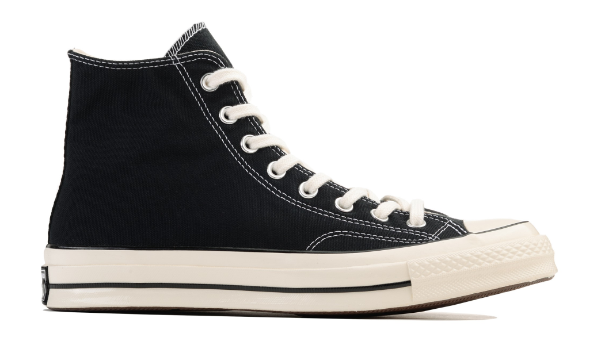

<!Doctype html>
    <html lang="ru"></html>
<head>
    <link rel="stylesheet" href="kartohka3.css">
      <meta charset="utf-8">
      
      <meta name="viewport" content="width=device-width, initial-scale=1.0">
    <title>Converse Chuck 70 High</title>
</head>
<body class="body">
  <main class="header">       
    <div class="background-color">
      <a href="file:///C:/Users/Alena/Pictures/Проектная%20работа/Проектная%20работа%202/Главная%20страница/Кроссы.html"><div class="logo"></div></a>
<nav>
  <ul>
   <li><a href="https://web.telegram.org/a/" ></a></li>
   <li><a href="https://vk.com"></a></li>
   <li><a href="https://www.youtube.com/">  </li></a>
   </ul>
</nav>
</div>       
  </header>

  <main class="main">
    <div class="DPcontainer">
    <div class="container">

<div class="name">
    <h1>Converse Chuck 70 High</h1>
        <h2>Comme des Garcons PLAY Black</h2>
            <p>История компании Converse началась в 1908 году, когда Маркус Миллс Конверс основал в Малдене, Массачусетс, обувную фабрику. Изначально компания специализировалась на выпуске рабочей обуви, особенно для шахтеров и строителей. В 1917 году компания была переименована в “Converse Rubber Shoe Company”, поскольку основной акцент был сделан на производство обуви из резины.
                <br> <br>
                В 1921 году Converse представила свою первую баскетбольную обувь, которая быстро стала популярной среди игроков. Это привело к тому, что в 1936 году компания решила сосредоточиться на производстве спортивной обуви. В последующие годы бренд стал ассоциироваться с баскетболом и стал одним из самых узнаваемых в мире спорта.
                <br> <br>
                В 1986 году Converse объединилась с компанией Nike, чтобы расширить свой рынок и улучшить свои продукты. С тех пор, бренд Converse стал еще более известным благодаря сотрудничеству с различными знаменитостями, спортсменами и модными дизайнерами. Сегодня Converse продолжает выпускать разнообразную спортивную обувь и одежду, а также является одним из ключевых игроков на рынке молодежной моды.
            </p>       
</div>
<div class="table">
    <div class="text1">
        <h3>О кроссах</h3>
    </div>
    <div class="text1">
        <h4>Дата выхода</h4>
            <div class="text2">
                <h4> 11/06/2022</h4> 
            </div>
    </div>
    <div class="text1">
        <h4>Розничная цена</h4>
        <div class="text2">
            <h4>145€</h4> 
        </div>
    </div>
    <div class="text1">
        <h4>Материалы</h4>
        <div class="text2">
            <h4>Текстиль 100%, резина</h4> 
        </div>
    </div>
</div>

    </div>
    </div>


    </main>

    <main class="footer">
        <div class="background-color2">    
            <a href="file:///C:/Users/Alena/Pictures/Проектная%20работа/Проектная%20работа%202/Главная%20страница/Кроссы.html"><div class="logo2"></div></a>
          <nav>
            <ul>
             <li> <a href="https://web.telegram.org/a/" ></a></li>
             <li><a href="https://vk.com"></a></li>
             <li><a href="https://www.youtube.com/">  </li></a>
             </ul>
          </nav>       
        </div>
    
        <div class="Fop">    
        </div>
        
        <div class="text_two">
          <p class="Flotters">КРОССЫ И ТОЧКА ® 2023</p>
        </div>
    
    
    </footer>
    
    </body>
    </html>
    </html>